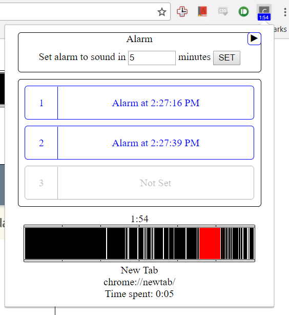
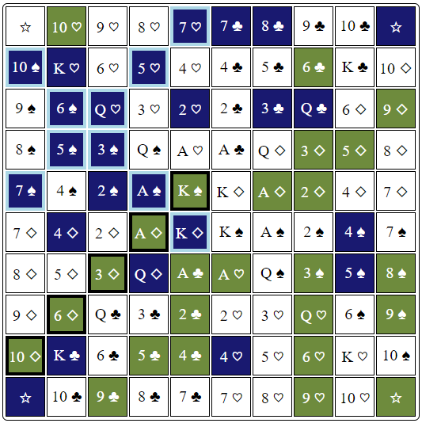

This is a google extension I created in order to help with my time management.
I keep track of my internet usage in the last 30 minutes, and if too much time is spend on webpages that I find distracting such as reddit and youtube, I block them.
This is done using the google APIs to inject content scripts into the webpage, which overlays the page with something more productive. At the moment, it shows a timeline of the last 30 minutes, as well as my todo list and productivity bar.
This extension is also integrated with my class schedule, ensuring that I am always on track in class, as well as showing my schedule any time I need it.
There are ways to interact with the extension via Chrome's browserAction. A lot of commands that can be used to override the default behaviour.
Largely written in JavaScript.
I keep track of my internet usage in the last 30 minutes, and if too much time is spend on webpages that I find distracting such as reddit and youtube, I block them.
This is done using the google APIs to inject content scripts into the webpage, which overlays the page with something more productive. At the moment, it shows a timeline of the last 30 minutes, as well as my todo list and productivity bar.
This extension is also integrated with my class schedule, ensuring that I am always on track in class, as well as showing my schedule any time I need it.
There are ways to interact with the extension via Chrome's browserAction. A lot of commands that can be used to override the default behaviour.
Largely written in JavaScript.

Can be played here as a multiplayer game.
My family plays a board game called "Double Series". After losing a couple game, my dad started complaining about how the game was all luck and said was probably no skill needed to win. In retaliation I created a game simulation with different AIs to show that different strategies can win more than others. Just kidding, I was also curious myself. Turns out there is skill involved.
This started a project that has since become a great learning tool for various web development features. I added more AIs, hosted it on a server, turned the game multiplayer, and faced my brother in an AI battle.
Built using Node.js
This started a project that has since become a great learning tool for various web development features. I added more AIs, hosted it on a server, turned the game multiplayer, and faced my brother in an AI battle.
Built using Node.js
Worked with a professor to design a spectrometer to measure absorption of light using mirrors and lenses
Created GUI to control and get measurements from the spectrometer using Matlab with GUIDE
Created GUI to control and get measurements from the spectrometer using Matlab with GUIDE
Solved over 80 challenging mathematical/computer program problems using Python, C#